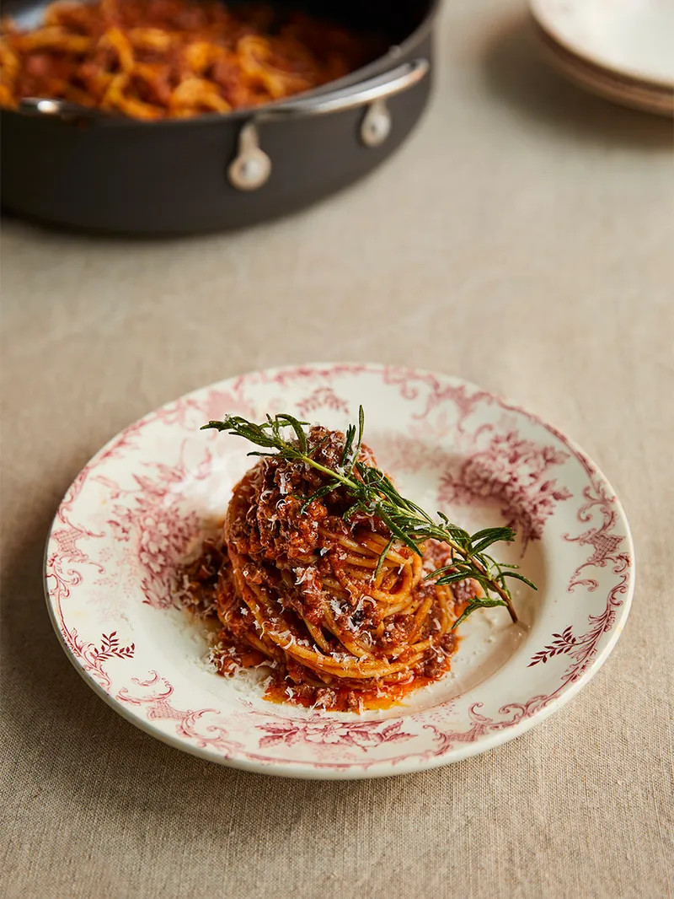

Bolognese að hætti Jamie Oliver

Mjög bragðgott bolognese með sósu frá grunni
Innihaldsefni
- 2 geirar hvítlaukur
- 1 laukur
- rósmarín
- 1 pakki gott beikon
- ólífu olía
- 500 gr. hakk
- 200 ml rauðvín/smá balsam edik
- 1x 280g krukka sólþurrkaðir tómatar
- 2x 400 dósir af söxuðum tómötum
- 500g spaghettí
- parmesan ostur
Skref
- Stillið ofn á 180˚C
- Flysjið og saxið hvítlaukinn smátt. Saxið laukinn og skerið beikonið í bita
- Hitið smá olíu í stórri pönnu og steikið hvítlauk, lauk og beikon. Kryddið með rósmarín
- Bætið við hakki, brjótið niður með sleif. Steikist þar til það brúnast og hellið þá víni í og sjóðið niður
- Maukuð sólþurrkuðu tómatana í matvinnsluvél eða með töfrasprota og bætið á pönnuna með söxuðu tómötunum
- Setjið lok á pönnuna og bakið í ofninum í 60 mínútur. Eftir 30 mínútur er got að hræra upp í
- Þegar 10 mínútur eru eftir, sjóðið spaghettí eftir leiðbeiningum. Hellið svo vatninu af en geymið einn bolla af pasta vatni
- Setjið pasta aftur á pönnuna með nokkrum skeiðum af bolognese, vel af parmesan og smá ólívu olíu og hrærið við pastað. Notið pastavatnið til að losa um spaghettíið
- Berið fram með meiri bolognese sósu og parmesan ofan á